感謝您對「自由軟體鑄造場」的支持與愛護，十多年來「自由軟體鑄造場」受中央研究院支持，並在資訊科學研究所以及資訊科技創新研究中心執行，現已完成階段性的任務。 本網站預計持續維運至 2021年底，網站內容基本上不會再更動。
也紀念我們永遠的朋友 李士傑先生（Shih-Chieh Ilya Li）。
也紀念我們永遠的朋友 李士傑先生（Shih-Chieh Ilya Li）。
Writer V.S. Word — 排版、設定雙管齊下讓文件交換不失真
Created at Friday, 25 July 2008 08:00 Last Updated on Tuesday, 28 July 2009 01:20
使用 OpenOffice.org Writer 編輯的文字檔在 Microsoft Word 裡開啟時，無可避免地一定會有格式不相容的問題，例如：文字間隔不正確、段落首字縮排不正常、標點符號位置不正確等，其實這些格式問題只要透過簡單的設定和正確的排版格式即可解決，讓文件在不同平台也能保持排版的一致性。
除了排版的正確性之外，為了確保文件的一致性，我們還需注意每個平台上文書軟體的預設設定都各有不同，因為這也會影響文件最終顯示的格式，例如 Writer 的頁面邊距預設設定就和 Word 不同，會讓使用者產生不熟悉的閱讀感受。因此除了注重排版格式外，我們還需注意每個軟體的設定，是否符合我們的需求，只要掌握了這兩個元素，即可以製做出在各種平台都不致產生太大變動的文件。 當然這些方式仍有其限制，例如對於超級複雜的 Word 表格，OpenOffice.org 仍然無法完全支援，這是即使再注重排版和設定也無法解決的問題，但對於一般申請表等常見表格，OpenOffice.org Writer 的表現完全足以勝任。除了上述的特殊狀況，目前 OpenOffice.org Writer 對於 Word 的支援以足以覆蓋百分之九十的使用狀況。
交流利器之一 — 正確的排版方式
要保持格式的一致，採用正確的排版方式是非常重要的一部份，設定正確的文件能在轉換平台時，將格式不相容的情形減到最低。常用的段落格式有以下數項：
◎ 標題設定
一份文件中最重要的部分之一當然就是文件的標題，設定標題的段落格式不但可以保持轉換平台時的格式正常，也讓文件在轉換平台後，能夠輕易地更改格式，除此之外，如果你需要產生目錄，標題格式設定也可以幫助你在轉換平台後自動調整目錄中的頁數。
設定標題格式非常簡單，只要將想設定的部分反白，選擇【格式】➔【樣式與格式】叫出「樣式與格式」視窗，接著選擇希望設定的標題樣式即可。
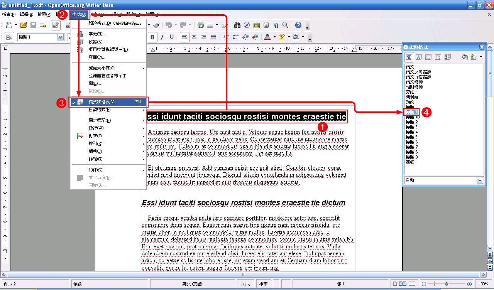
◎ 內文段落設定
除此之外，由於不同平台間的文件交換，可能使不正確的空白設定出現問題，因此一般在跨平台的文件排版時，我們儘量不使用空白鍵和〔Enter〕鍵定位，也就是不使用空白鍵輸入段首空白；也避免利用〔Enter〕鍵輸入段落間隔，我們可以利用段落設定來達成這些功能。
要調整段落設定，首先我們先將預更改設定的部分反白後，再選取【格式】➔【段落】叫出「段落」視窗。
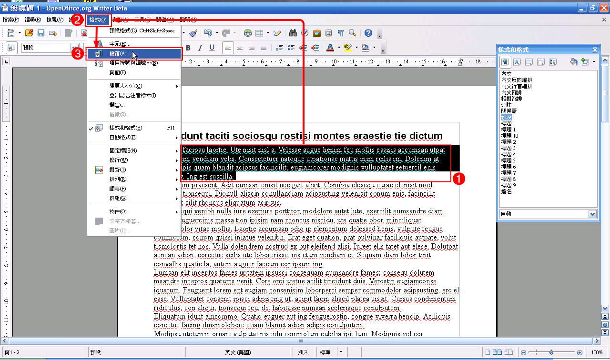
在段落視窗中，我們可以在「縮排」區域中設定段落的前後縮排，和段首空白；在「間隔」區域中設定段落間隔，並可以在「行距」區域中設定選取段落中每一行的間隔。
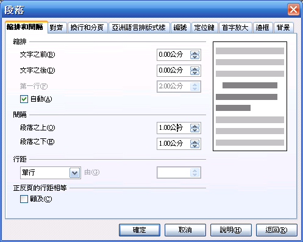
◎ 修改預設段落格式
如果要讓你所設定的樣式成為預設的常用樣式，你可以在「樣式與格式」視窗中欲修改的樣式上按一下滑鼠右鍵，並選擇【修改】。
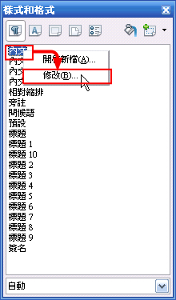
進入「段落樣式」視窗後，即可用前述方式調整所需的設定，修改完成後按一下〔確定〕按鈕即可儲存修改。
儲存後，你就可以看到所有對應的段落格式套用到你剛才的設定，如此一來，我們就不需要使用空白鍵和〔Enter〕鍵也可以清楚地區分段落，而且欲修改時，只要再次修改段落格式，即可將變更套用在所有對應的段落上。
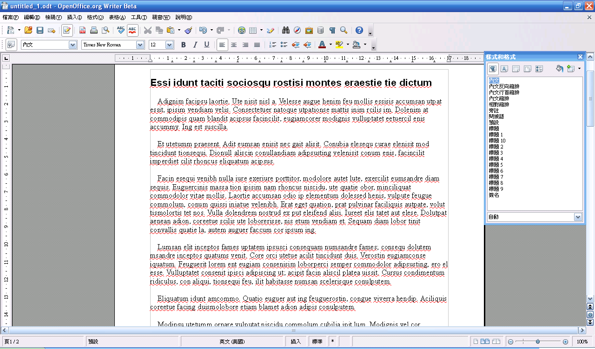
◎ 使用手動換行功能強制分頁
一般使用者除了常用〔Enter〕鍵留下段落間隔外，也常連續使用〔Enter〕鍵以達到分頁的效果，這正是造成不同平台間格式不一致的原因之一，因為不同的文書軟體對排版的預設設定常不相同，使得行距、頁緣等排版設定在不同軟體間顯示的方式不會一致。因此遇到需要分頁的時候，我們最好使用較不受文書軟體影響的 「手動換行」功能來分頁。
在遇到需分頁的情形時，我們可以將游標置於要換到下一行的段落最前緣，並選擇【插入】➔【手動換行】。
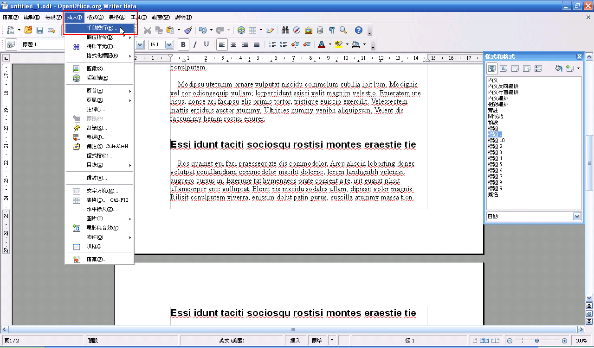
然後選擇「換頁」後，按一下〔確定〕按鈕，如此一來，在游標後的段落即會自動換到下一行，讓不同軟體開啟文件時，能有相同的分頁設定。
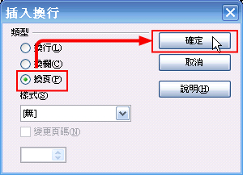
交流利器之二 — 軟體設定的變更
◎ 頁面設定
用習慣 Microsoft Word 的使用者，可能仍然會覺得 Writer 所產生的文件拿到 Word 上開啟時，怎麼看怎麼不順眼。這可能是由於 Word 和 Writer 對於頁面邊距的預設設定不同所致，我們可以修改 Writer 的預設頁面邊距以讓文件更符合使用者的習慣。
我們可以按一下【格式】➔【頁面】來修改頁面邊距。
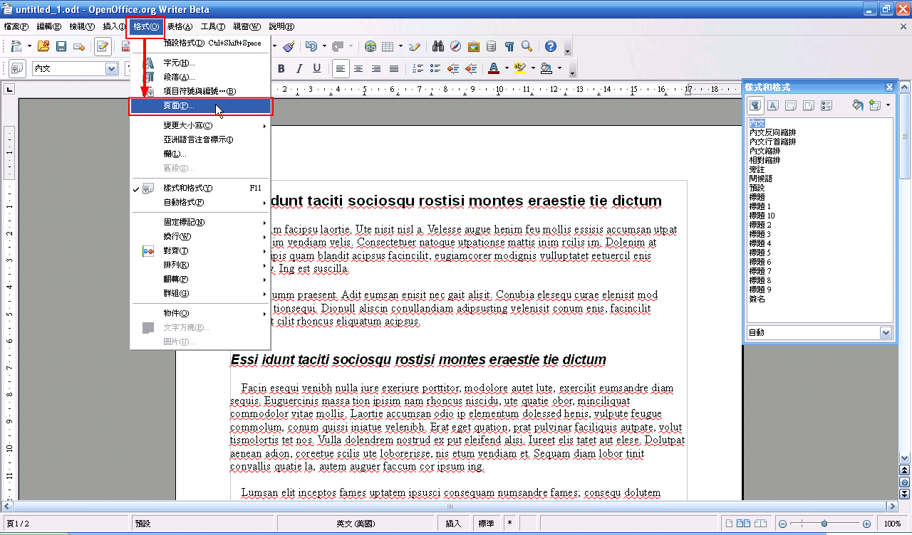
Writer 所預設的頁面邊距是上、下、左、右各 2 公分，而 Microsoft Word 的預設設定是上、下各 2.54 公分；左、右各 3.17 公分。打開「頁面樣式：預設」視窗後，我們可以在「頁面邊距」區域中將設定更改成我們所習慣的方式。
◎ 標點符號的設定
由於 Writer 原本就是西方文字的文書軟體，因此在處理中文排版時總會有些不相容的狀況，例如標點符號與文字重疊、標點超出內文邊界等，讓使用 Writer 所編輯的文件在一般使用者眼中顯得有些雜亂，不過這些問題都可以透過簡單的設定解決。
這份用 Microsoft Word 編輯的文件使用 Writer 開啟後，會發生標點超出內文邊界的問題。
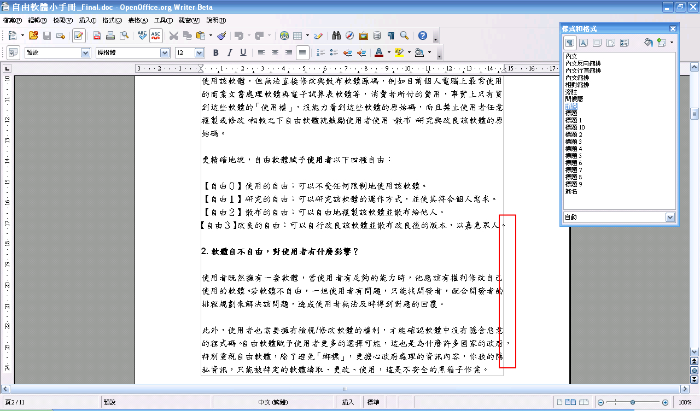
這時我們只要先反白全文，然後選擇【格式】➔【段落…】。
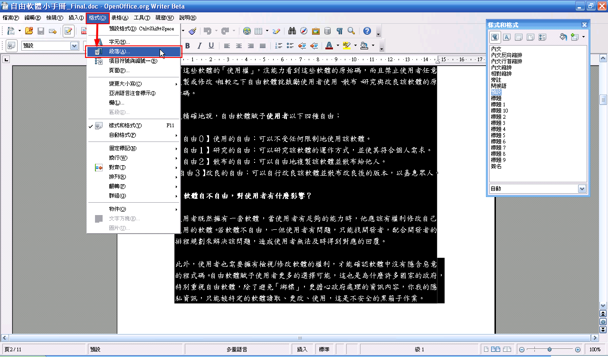
並在「段落」視窗的「亞洲語言排版式樣」活頁標籤中，取消勾選「行末附加標點符號」，並按一下確定。
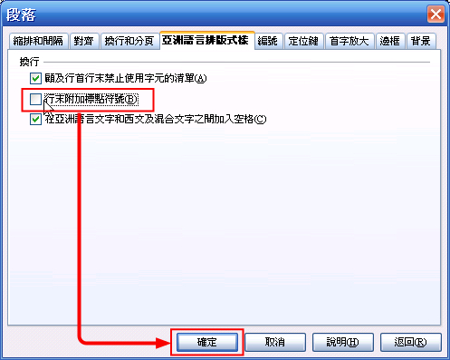
這時我們可以看到整份文件中的標點已大致大內文邊界中，但仍有一些標點因為壓縮和避頭點的關係無法換行，因而超出了邊界；另外，也有一些標點符號和字重疊。
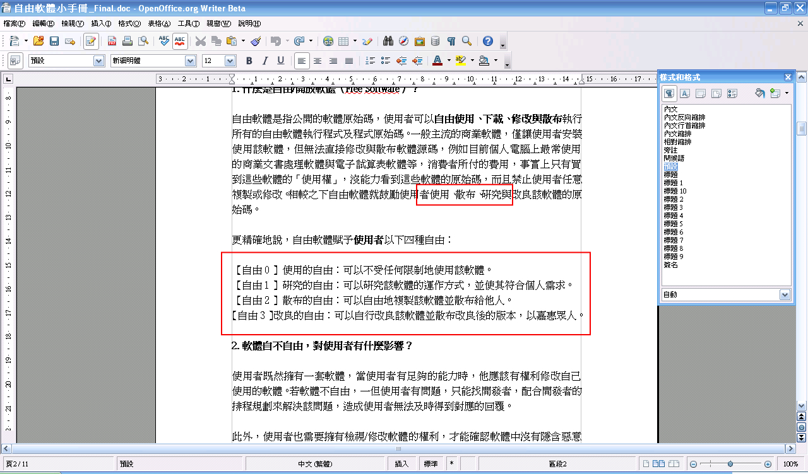
這時我們只需在【工具】➔【選項…】中，調整字元間隔的壓縮設定，就可以解決這個問題。
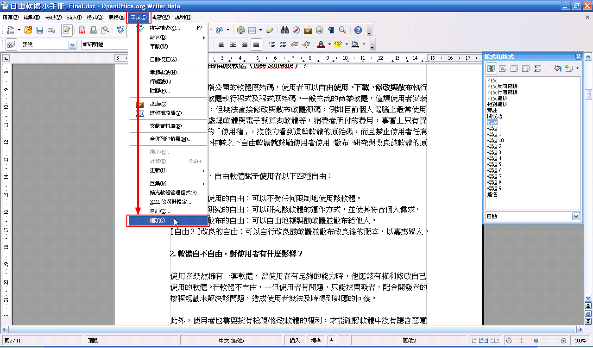
進入「選項」視窗後，選擇【語言設定】➔【亞洲語言版面配置】，然後在「字元間隔」區域中選擇「不壓縮」。
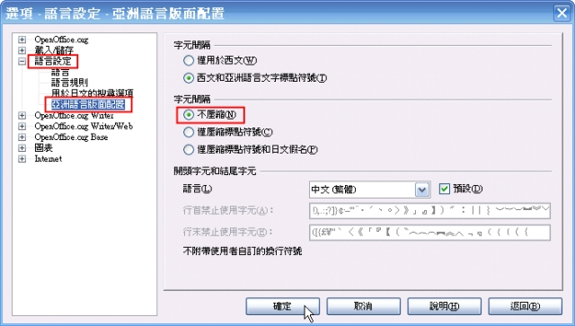
然後回到編輯頁面，你可以發現所有的問題都經由這個簡單的設定解決了。
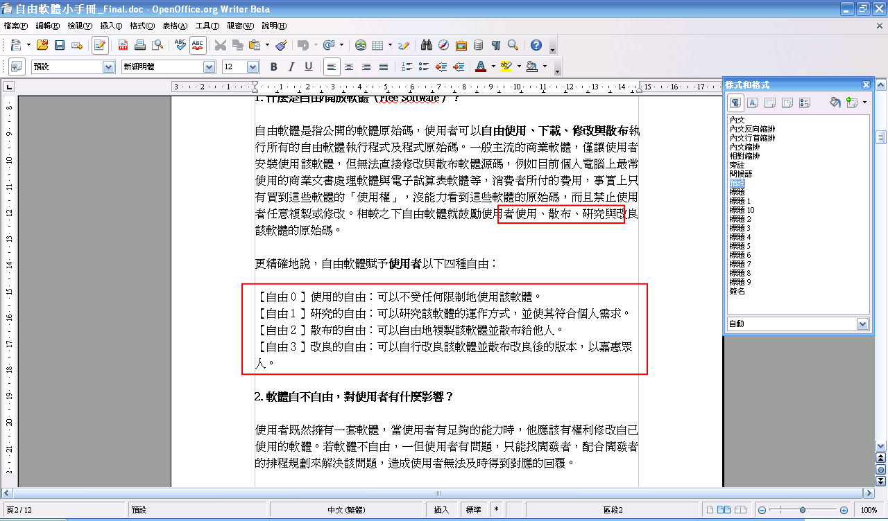
結語
基本上，只要掌握前述兩項利器，那麼你的文件無論拿到 Windows、Linux 或是 Mac 平台下，用任何相容於 Microsoft Word 的文書軟體開啟，都應該可以將格式的變動維持在最小，甚至拿到 Google Docs 下也不會有太多問題。從此以後文件的不相容性不再是問題，即使你必須和別人交流文件，也可以選擇任何文書軟體，不論是 OpenOffice.org、Microsoft Word、iWork Pages、TextEdit 都任你使用。當然，以 OSSF 的立場來看，我得說支援強大、完全開放源碼的 OpenOffice.org Writer 是你最佳的選擇，最重要的一點是：它是完全免費的（是的，免錢當然是重點，因此我們就別提什麼「自由」了）。
Open Source Software Foundry‧ Best Viewed with IE7.0 or Firefox2.0 above, 1024x768 Resolution. E-Mail：contact@openfoundry.org
Address：No.128, Sec.2, Academia Rd., Institute of Information Science, Academia Sinica, Nangang District, Taipei City 11529, Taiwan (R.O.C).
Privacy Policy. Terms-of-use
Address：No.128, Sec.2, Academia Rd., Institute of Information Science, Academia Sinica, Nangang District, Taipei City 11529, Taiwan (R.O.C).
Privacy Policy. Terms-of-use